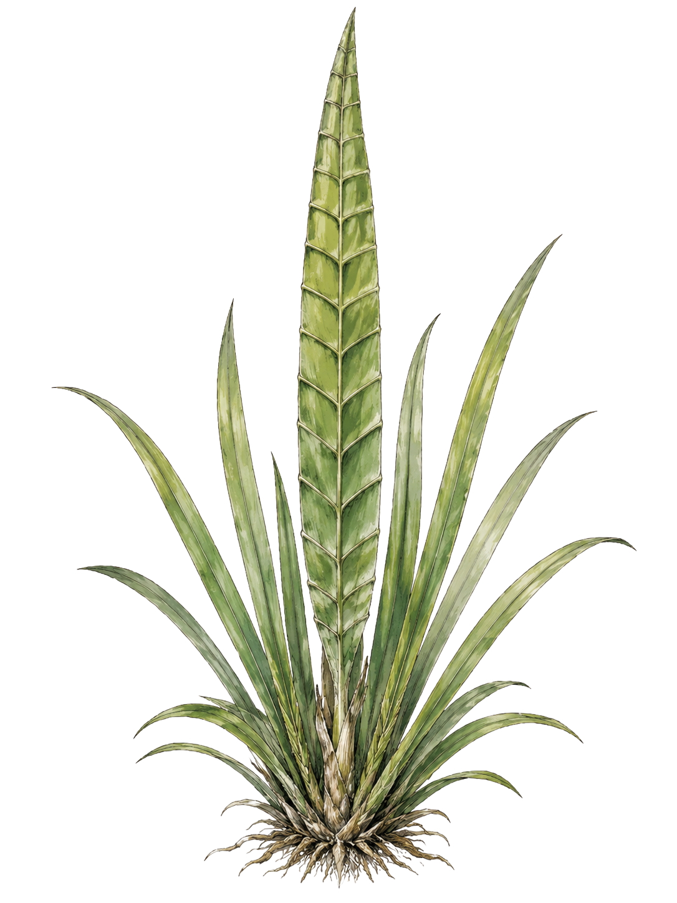

定義
エラムノーバで最も一般的に使用される長さの基本単位。1リーヴは12ティルに相当し、現実世界では約31.8cmに相当する。
詳細解説
「リーヴ」の名称は、古くから自生する植物「リーヴァ草」の葉に由来する。
成熟したリーヴァ草の中央葉は成人の拳から肘までほどの長さとなり、その一枚分を長さの基準として用いたことが始まりとされる。
後に交易の発展とともに商人ギルドが基準尺を制定し、エラムノーバ共通の長さ単位として広く普及した。
ティル
- 換算
- 12ティル＝1リーヴ／1ティル＝約2.65cm
- 主な用途
- 宝石、魔石、硬貨、刃の幅、布の縫い代、鱗や牙など
「ティル」は、古い商人言葉で葉脈の区切りを意味する言葉に由来する。
リーヴァ草の成熟した葉には、付け根から先端まで十二の区切りが存在し、その一区切り分の長さを「一ティル」と呼んだことが始まりである。
当初は装飾品や薬草、布地などの小さな品物を測る際に用いられていたが、やがて鍛冶師や宝石職人にも広まり、細部の寸法を表す一般的な小単位となった。
リーヴ
- 換算
- 1リーヴ＝12ティル／1リーヴ＝約31.8cm
- 主な用途
- 人の身長、武器、家具、扉、動物や魔獣の体長など
「リーヴ」は、古い言葉で葉を意味する呼び名に由来する。
十分に成熟したリーヴァ草の中央葉一枚を、付け根から先端まで測った長さが一リーヴの原型となった。
その長さがおおむね成人の拳から肘までに相当したため、葉を持っていない場合でも、自分の腕を使って大まかな長さを測ることができた。
交易が盛んになる以前は地域ごとにわずかな差があったが、商人ギルドによって一リーヴが正式に統一された。以後は金属製や硬木製の「リーヴ尺」が各地の市場や工房へ配布された。
ガルナ
- 換算
- 1ガルナ＝318リーヴ／1ガルナ＝約101.124m
- 主な用途
- 土地、城壁、大型建築物、街区、港、橋、長距離射程など
「ガルナ」は、古い測量職人の言葉で張り渡した測量縄を意味する。
最初に公的な測量縄が作られた際、320リーヴ分の縄のうち二リーヴ分が両端の輪と固定用の結び目に使われたため、実際に測れる318リーヴが基準となった。
この測量縄は「ガルナ縄」と呼ばれ、やがてその有効長を表す単位として「ガルナ」という名称が定着した。
ヴェルド
- 換算
- 1ヴェルド＝318ガルナ／約32.157km（正確には約32.157432km）
- 主な用途
- 都市間の距離、街道、軍の行軍、交易路、国土、航海距離など
「ヴェルド」は、古い街道管理者たちの間で使われていた言葉で、「ひとつの道程」あるいは「宿場から宿場までの一区間」を意味する。
主要街道に318ガルナごとに宿場を設置することが定められ、その一区間を「一ヴェルド」と呼ぶようになった。
現在では地図や公文書、商人ギルドや冒険者ギルドの依頼書で長距離単位として用いられ、エラムノーバ全土の共通基準となっている。
単位体系が成立した流れ
- リーヴァ草の葉が簡易的な物差しとして使われる。
- 葉の十二の区切りからティルが生まれる。
- 葉一枚分の長さがリーヴとして定着する。
- 土地測量用のガルナ縄からガルナが生まれる。
- 街道の宿場間距離からヴェルドが生まれる。
- 商人ギルドが基準尺を統一し、各国や冒険者ギルドにも普及する。

用例・備考
成人男性の平均身長は約5リーヴ。
1リーヴ＝12ティル＝約31.8cm。